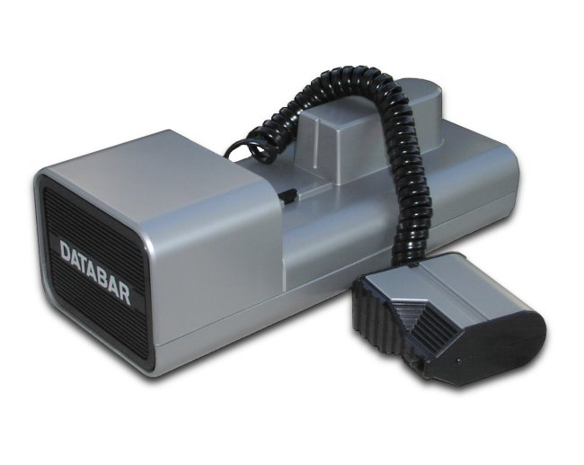
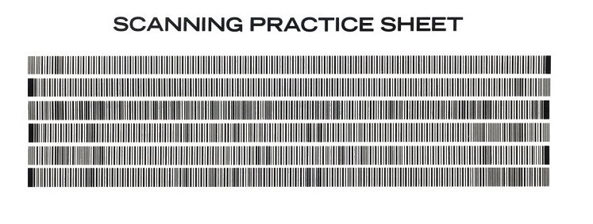
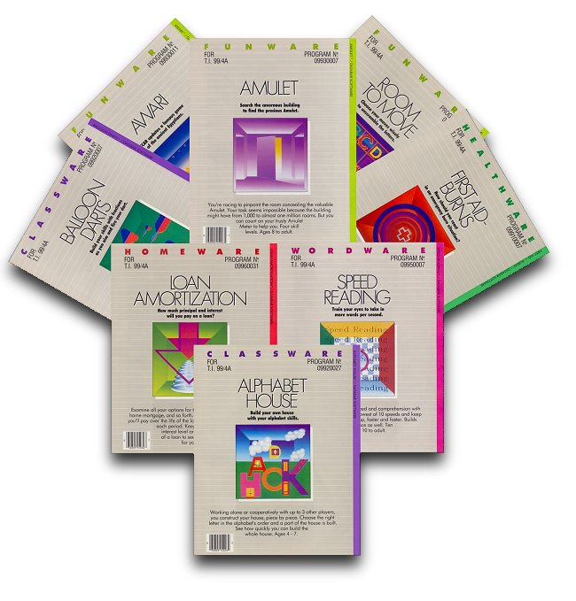

Databar OSCAR
Load BASIC programs by swiping a wand over magazine barcodes until it beeps

Overview
OSCAR — "Optical SCAnning Reader" — was a $79.95 home-computer barcode scanning system sold by the Databar Corporation of Eden Prairie, Minnesota, in 1983. A handheld wand on a telephone-style coiled cord connected through a small silver interface box to a home computer; you rolled the wand across barcode lines printed in a companion publication, Databar — The Monthly Bar Code Software Magazine, and the computer loaded the BASIC program encoded in the bars. To the computer, OSCAR emulated a cassette drive: the Commodore 64 version plugged into the cassette port, the Atari version faked a tape deck over the SIO port. Only the interface cable was platform-specific.
The interaction ritual was the product. Success was signaled by an audible beep, and it was finicky — publisher Kim Garretson: "Sometimes you had to go across a single line of code three or four or five or seven times to hear the little beep." A practice scanning sheet and a plastic scanning template trained users to keep their swipes straight. The system was powered by four D batteries and used an HP HEDS-3000 optical sensor — the same sensor family as HP's own barcode wand for the HP-41C calculator.
Databar published exactly one issue, in three editions (Atari 8-bit with 13 programs, TI-99/4A with 9, C64 with 9) — "it wasn't very monthly after all." The software was simple BASIC: OSCAR's Match, Financial Quiz, Math Challenge, Health Assessment, MPG Calculator. Ads pitched "Expert Typist with Keyboard vs. Eight-year-old with OSCAR": typing a two-page BASIC program took 69 minutes, scanning it about 8. Founder Don Picard: "Concept was basically dead before it got born." Engineer Neal Enzenauer: "We thought we were going to set the world on fire and make magnetic media obsolete — but I guess we didn't."
Deep dive
OSCAR's defining interaction: roll the wand over a printed barcode until you hear the beep. The beep meant the box had successfully decoded the line; failure meant trying again, three or four or seven times. A practice sheet and a plastic template helped keep scans straight. The printed page as software distribution, two years before Cauzin Softstrip's machine-read strip — and the inversion of the VCR Plus+ relationship: a machine reading ink, rather than a human transcribing digits.
To the host computer, OSCAR was a cassette drive. The C64 version used the cassette port; the Atari version emulated a tape deck over the SIO port. This was a deliberate interface decision: existing software-loading code expected a tape deck, and OSCAR faked one, so no special software drivers were needed on the machine side — just the wand, the box, and the printed bars.
Databar — The Monthly Bar Code Software Magazine shipped a single issue (in Atari, TI-99/4A, and Commodore editions), then the company folded. The oral history is preserved in the ANTIC Atari podcast (interview 321) with executive editor Don Picard, publisher Kim Garretson, and principal engineer Neal Enzenauer. The hardware itself survives in collector scans: box, warranty card, registration card, manual, software binders, and the practice scanning sheet.
OSCAR used the HP HEDS-3000 optical sensor, the same sensor family as Hewlett-Packard's own barcode wand for the HP-41C calculator (1981). Contemporary press credited HP with dropping barcode-wand prices from $300+ to the consumer range, making OSCAR's $79.95 price possible. The museum's collection now holds two stops on the printed-ink-as-software arc: OSCAR (1983, hand-scanned barcodes) and Cauzin Softstrip (1985, motorized strip reader).
Team & pioneers
- Databar Corporation Eden Prairie, Minnesota company; produced OSCAR and Databar Magazine in 1983.
- Don Picard Executive editor; ex-Webb Publishing custom-publishing; "Concept was basically dead before it got born."
- Kim Garretson Publisher; described the beep-until-success swipe ritual in oral history.
- Neal Enzenauer Principal engineer; "We thought we were going to set the world on fire and make magnetic media obsolete."
Media


Sources
- ANTIC Atari podcast, Interview 321 — Databar OSCAR (Picard, Garretson, Enzenauer oral history)
- Databar Magazine, Atari Edition — full scan, archive.org
- Databar OSCAR box, warranty, registration card scans — archive.org
- mainbyte.com — Databar OSCAR hardware page (photos and manuals)
- Compute! #41, October 1983 — "Optical Scanner System" news
- Oscar barcode decoder project (GitHub) and write-up